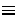
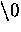
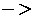

C uses pointers a lot. Why?:
C uses pointers explicitly with:
NOTE: Pointers are perhaps the most difficult part of C to understand. C's implementation is slightly different DIFFERENT from other languages.
A pointer is a variable which contains the address in memory of another variable. We can have a pointer to any variable type.
The unary or monadic operator & gives the ``address of a variable''.
The indirection or dereference operator * gives the ``contents of an object pointed to by a pointer''.
To declare a pointer to a variable do:
int *pointer;
NOTE: We must associate a pointer to a particular type: You can't assign the address of a short int to a long int, for instance.
Consider the effect of the following code:
y = *ip;
x = ip;
*ip = 3;
int x = 1, y = 2;
int *ip;
ip = &x;
It is worth considering what is going on at the machine level in memory to fully understand how pointer work. Consider Fig. 9.1. Assume for the sake of this discussion that variable x resides at memory location 100, y at 200 and ip at 1000. Note A pointer is a variable and thus its values need to be stored somewhere. It is the nature of the pointers value that is new.
Fig. 9.1 Pointer, Variables and Memory Now the assignments x = 1 and y = 2 obviously load these values into the variables. ip is declared to be a pointer to an integer and is assigned to the address of x (&x). So ip gets loaded with the value 100.
Next y gets assigned to the contents of ip. In this example ip currently points to memory location 100 -- the location of x. So y gets assigned to the values of x -- which is 1.
We have already seen that C is not too fussy about assigning values of different type. Thus it is perfectly legal (although not all that common) to assign the current value of ip to x. The value of ip at this instant is 100.
Finally we can assign a value to the contents of a pointer (*ip).
IMPORTANT: When a pointer is declared it does not point anywhere. You must set it to point somewhere before you use it.
So ...
int *ip;
*ip = 100;
will generate an error (program crash!!).
The correct use is:
int *ip;
int x;
ip = &x;
*ip = 100;
We can do integer arithmetic on a pointer:
float *flp, *flq;
*flp = *flp + 10;
++*flp;
(*flp)++;
flq = flp;
NOTE: A pointer to any variable type is an address in memory -- which is an integer address. A pointer is definitely NOT an integer.
The reason we associate a pointer to a data type is so that it knows how many bytes the data is stored in. When we increment a pointer we increase the pointer by one ``block'' memory.
So for a character pointer ++ch_ptr adds 1 byte to the address.
For an integer or float ++ip or ++flp adds 4 bytes to the address.
Consider a float variable (fl) and a pointer to a float (flp) as shown in Fig. 9.2.
Fig. 9.2 Pointer Arithmetic Assume that flp points to fl then if we increment the pointer ( ++flp) it moves to the position shown 4 bytes on. If on the other hand we added 2 to the pointer then it moves 2 float positions i.e 8 bytes as shown in the Figure.
Let us now examine the close relationship between pointers and C's other major parts. We will start with functions.
When C passes arguments to functions it passes them by value.
There are many cases when we may want to alter a passed argument in the function and receive the new value back once to function has finished. Other languages do this (e.g. var parameters in PASCAL). C uses pointers explicitly to do this. Other languages mask the fact that pointers also underpin the implementation of this.
The best way to study this is to look at an example where we must be able to receive changed parameters.
Let us try and write a function to swap variables around?
The usual function call:
swap(a, b) WON'T WORK.
Pointers provide the solution: Pass the address of the variables to the
functions and access address of function.
Thus our function call in our program would look like this:
swap(&a, &b)
The Code to swap is fairly straightforward:
void swap(int *px, int *py)
{ int temp;
temp = *px;
/* contents of pointer */
*px = *py;
*py = temp;
}
We can return pointer from functions. A common example is when passing back structures. e.g.:
typedef struct {float x,y,z;} COORD;
main()
{ COORD p1, *coord_fn();
/* declare fn to return ptr of
COORD type */
....
p1 = *coord_fn(...);
/* assign contents of address returned */
....
}
COORD *coord_fn(...)
{ COORD p;
.....
p = ....;
/* assign structure values */
return &p;
/* return address of p */
}
Here we return a pointer whose contents are immediately unwrapped into a variable. We must do this straight away as the variable we pointed to was local to a function that has now finished. This means that the address space is free and can be overwritten. It will not have been overwritten straight after the function ha squit though so this is perfectly safe.
Pointers and arrays are very closely linked in C.
Hint: think of array elements arranged in
consecutive memory locations.
Consider the following:
int a[10], x;
int *pa;
pa = &a[0]; /* pa pointer to address of a[0] */
x = *pa;
/* x = contents of pa (a[0] in this case) */
Fig. 9.3 Arrays and Pointers
To get somewhere in the array (Fig. 9.3) using a pointer we could
do:
pa + i  a[i]
WARNING: There is no bound checking of arrays and pointers so you can
easily go beyond array memory and overwrite other things.
C however is much more subtle in its link between arrays and pointers.
For example we can just type
pa = a;
instead of
pa = &a[0]
and
a[i] can be written as *(a + i).
i.e. &a[i] a + i.
We also express pointer addressing like this:
pa[i] *(pa + i).
However pointers and arrays are different:
This stuff is very important. Make sure you understand it. We will see a lot
more of this.
We can now understand how arrays are passed to functions.
When an array is passed to a function what is actually passed is its initial
elements location in memory.
So:
strlen(s) strlen(&s[0])
This is why we declare the function:
int strlen(char s[]);
An equivalent declaration is : int strlen(char *s);
since char s[] char *s.
strlen() is a standard library function (Chapter 18) that returns the length of a string. Let's look at how we may write a function:
int strlen(char *s)
{ char *p = s;
while (*p != `);
p++;
return p-s;
}
Now lets write a function to copy a string to another string. strcpy() is a standard library function that does this.
void strcpy(char *s, char *t)
{ while ( (*s++ = *t++) != `);}
This uses pointers and assignment by value.
Very Neat!!
NOTE: Uses of Null statements with while.
We can have arrays of pointers since pointers are variables.
Example use:
Sort lines of text of different length.
NOTE: Text can't be moved or compared in a single operation.
Arrays of Pointers are a data representation that will cope efficiently
and conveniently with variable length text lines.
How can we do this?:
Fig. 9.4 Arrays of Pointers (String Sorting Example)
This eliminates:
We should think of multidimensional arrays in a different way in C:
A 2D array is really a 1D array, each of whose elements is itself an array
Hence
a[n][m] notation.
Array elements are stored row by row.
When we pass a 2D array to a function we must specify the number of columns --
the number of rows is irrelevant.
The reason for this is pointers again. C needs to know how many columns in
order that it can jump from row to row in memory.
Considerint a[5][35] to be passed in a function:
We can do:
f(int a[][35]) {.....}
or even:
f(int (*a)[35]) {.....}
We need parenthesis (*a) since [] have a higher precedence than *
So:
int (*a)[35]; declares a pointer to an array of 35 ints.
int *a[35]; declares an array of 35 pointers to ints.
Now lets look at the (subtle) difference between pointers and arrays.
Strings are a common application of this.
Consider:
char *name[10];
char Aname[10][20];
We can legally do name[3][4] and Aname[3][4] in C.
However
NOTE: If each pointer in name is set to point to a 20 element array
then and only then will 200 chars be set aside (+ 10 elements).
The advantage of the latter is that each pointer can point to arrays be of
different length.
Consider:
char *name[] = { ``no month'', ``jan'',
``feb'', ... };
char Aname[][15] = { ``no month'', ``jan'',
``feb'', ... };
Fig.  2D Arrays and Arrays of Pointers
2D Arrays and Arrays of Pointers
Initialisation of arrays of pointers is an ideal application for an internal static array.
some_fn()
{ static char *months = { ``no month'',
``jan'', ``feb'',
...};
}
static reserves a private permanent bit of memory.
These are fairly straight forward and are easily defined. Consider the
following:
struct COORD {float x,y,z;} pt;
struct COORD *pt_ptr;
pt_ptr = &pt; /* assigns pointer to pt */
the  operator lets us access a member of the structure pointed to by a pointer.i.e.:
pt_ptrx = 1.0;
pt_ptry = pt_ptry - 3.0;
Example: Linked Lists
ELEMENT n1, n2;
n1.next = &n2;
typedef struct { int value;
ELEMENT *next;
} ELEMENT;
Fig.  Linking Two Nodes
NOTE: We can only declare next as a pointer to ELEMENT. We
cannot have a element of the variable type as this would set up a
recursive definition which is NOT ALLOWED. We are allowed to set a
pointer reference since 4 bytes are set aside for any pointer.
Linking Two Nodes
NOTE: We can only declare next as a pointer to ELEMENT. We
cannot have a element of the variable type as this would set up a
recursive definition which is NOT ALLOWED. We are allowed to set a
pointer reference since 4 bytes are set aside for any pointer.
The above code links a node n1 to n2 (Fig. 9.6) we will look at this matter further in the next Chapter.
Here we will highlight two common mistakes made with pointers.
int *x;
*x = 100;
we need a physical location say: int y;
x = &y;
*x = 100;
This may be hard to spot. NO COMPILER ERROR. Also x could some random address at initialisation.
Suppose we have a function malloc() which tries to allocate memory
dynamically (at run time) and returns a pointer to block of memory requested if
successful or a NULL pointer
otherwise.
char *malloc() -- a standard library function (see later).
Let us have a pointer: char *p;
Consider:
*p = (char *) malloc(100);
/* request 100 bytes of memory */
*p = `y';
There is mistake above. What is it?
No * in
*p = (char *) malloc(100);
Malloc returns a pointer. Also p does not point to any address.
The correct code should be:
p = (char *) malloc(100);
If code rectified one problem is if no memory is available and p is
NULL. Therefore we can't do:
*p = `y';.
A good C program would check for this:
p = (char *) malloc(100);
if ( p == NULL)
{ printf("Error: Out of Memory \n");
exit(1);
}
*p = `y';
Exercise 12453
Write a C program to read through an array of any type using pointers. Write a C program to scan through this array to find a particular value.
Exercise 12454
Write a program to find the number of times that a given word(i.e. a short string) occurs in a sentence (i.e. a long string!).
Read data from standard input. The first line is a single word, which is followed by general text on the second line. Read both up to a newline character, and insert a terminating null before processing.
Typical output should be:
The word is "the".
The sentence is "the cat sat on the mat".
The word occurs 2 times.
Exercise 12455
Write a program that takes three variable (a, b, b) in as separate parameters and rotates the values stored so that value a goes to be, b, to c and c to a.